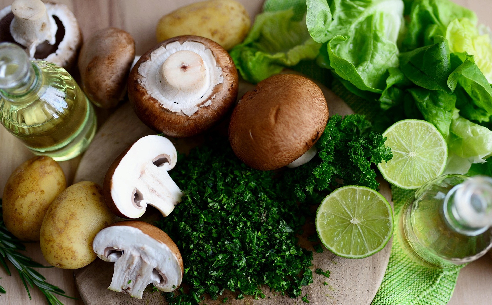
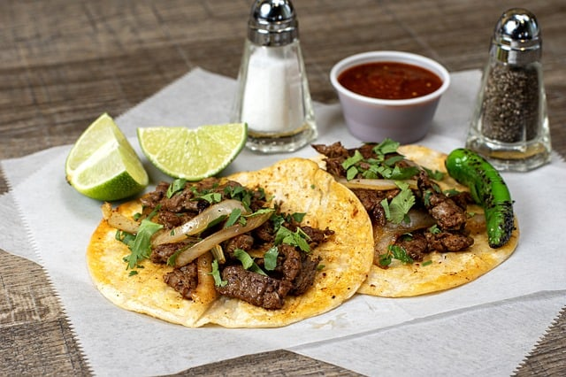
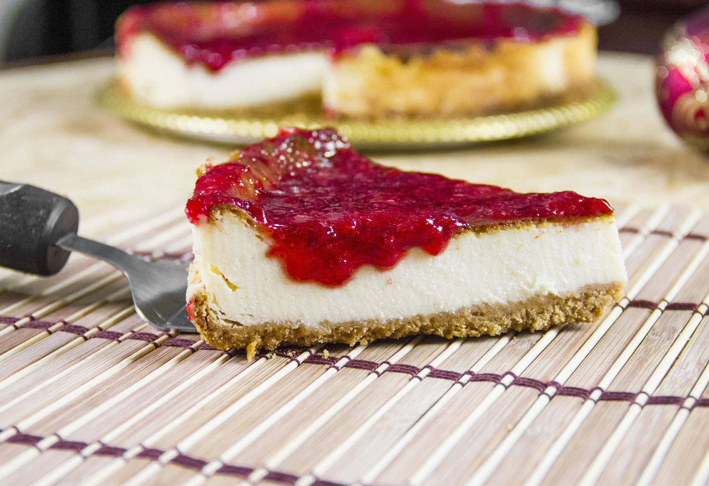

Anthony's personal top 5's
Top 5 foods at the moment (i was hungry)
For this top 5 list it is bias towards comfort food since i wrote this when I hungry. Probably should make something from this list.
Pozole is a traditional Mexican soup or stew made with hominy (nixtamalized corn) and typically features pork or chicken as the main protein. It's simmered for hours with garlic, onions, and spices like oregano and cumin, creating a rich, flavorful broth. Pozole comes in three main varieties—rojo (red), verde (green), and blanco (white)—depending on the added chilies and herbs. It's commonly served with fresh toppings like shredded lettuce or cabbage, radishes, lime, oregano, and tostadas, making it both hearty and refreshing. Often enjoyed during celebrations and holidays, pozole is a beloved staple of Mexican cuisine.

Tacos de asada are a classic and beloved Mexican street food made with grilled, marinated beef—usually skirt or flank steak—served on warm corn tortillas. The meat is typically seasoned with ingredients like lime juice, garlic, and spices before being seared to perfection for a smoky, savory flavor. They're often topped simply with chopped onions, fresh cilantro, salsa, and a squeeze of lime. Easy to eat and packed with bold flavor, tacos de asada are a staple at taco stands, backyard cookouts, and Mexican food festivals alike.
Waffles are a popular breakfast dish made from a batter of flour, eggs, milk, and butter, cooked between two hot plates to create a crisp, grid-like texture. Golden and crunchy on the outside, soft and fluffy on the inside, waffles are endlessly versatile. They can be topped with butter, syrup, fruit, whipped cream, or even fried chicken for a savory twist. Originating in Europe, waffles have become a worldwide favorite thanks to their satisfying texture and customizable flavor combinations.
Pizza is a globally loved dish that originated in Italy, traditionally made with a thin, round crust topped with tomato sauce, cheese, and various toppings like pepperoni, vegetables, or olives. Baked in an oven until the cheese melts and the crust turns golden, pizza is known for its perfect balance of crispy, chewy, and gooey textures. Styles vary widely—from classic Neapolitan to deep-dish Chicago and thin-crust New York. Whether enjoyed plain or piled high with toppings, pizza's universal appeal lies in its bold flavors, shareable nature, and endless customizability.

Cheesecake is a rich, creamy dessert made primarily from cream cheese, sugar, and eggs, set on a graham cracker crust. The filling is smooth and velvety, often flavored with vanilla, lemon, or other variations. Cheesecake can be baked or chilled, and is sometimes topped with fruit, chocolate, or caramel for extra sweetness and texture. It has a dense yet light texture that melts in your mouth, making it a favorite for special occasions and celebrations. With endless flavor variations, from classic New York-style to fruity or chocolate versions, cheesecake offers a decadent treat for any dessert lover.
To wrap it up, my top 5 foods each bring something unique to the table. Pozole offers a comforting, rich broth that's perfect for any occasion, while tacos de asada serve up bold, smoky flavors in every bite. Waffles are the ultimate versatile treat, whether sweet or savory. Pizza is the classic favorite with endless variations, and cheesecake is the indulgent dessert that hits all the right notes with its creamy, decadent texture. Each of these foods has earned its spot for their unforgettable taste and universal appeal, making them stand out in their own delicious way.